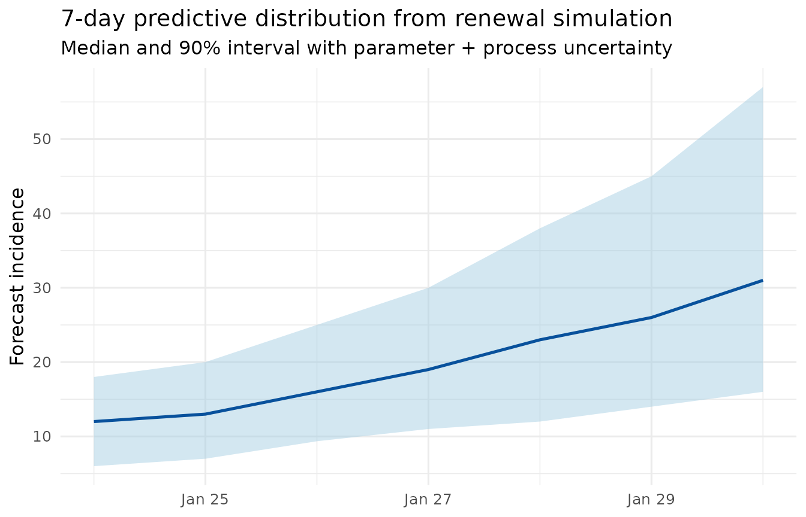
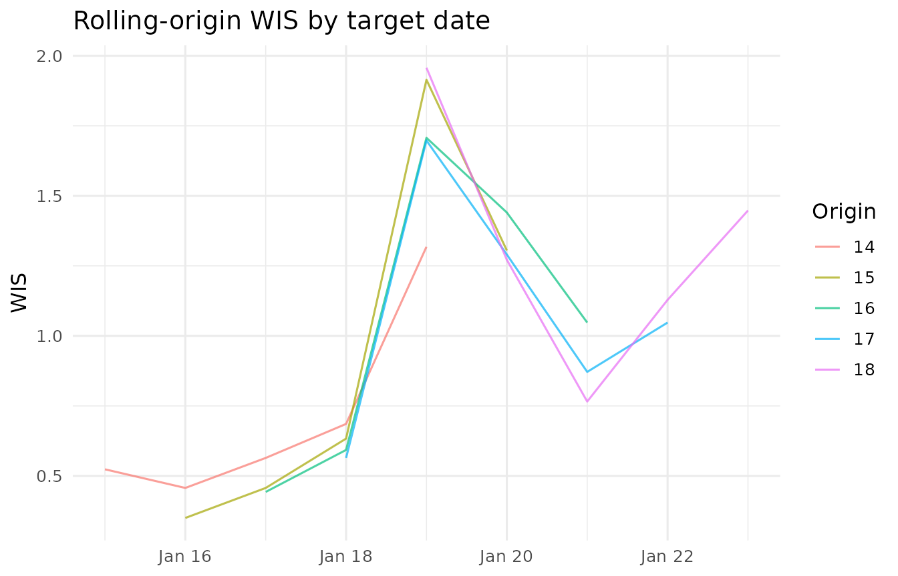

Advanced count time-series uncertainty and forecast evaluation
Source:vignettes/cat-ba-week1-analysis.Rmd
cat-ba-week1-analysis.Rmd
library(omia)
library(dplyr)
#>
#> Attaching package: 'dplyr'
#> The following objects are masked from 'package:stats':
#>
#> filter, lag
#> The following objects are masked from 'package:base':
#>
#> intersect, setdiff, setequal, union
library(tidyr)
library(ggplot2)Scope
This vignette demonstrates a reproducible count time-series workflow with explicit uncertainty handling and out-of-sample evaluation. The emphasis is on methodology:
- uncertainty estimation at each modeling stage,
- uncertainty propagation into predictive distributions,
- interpretation of predictive intervals,
- rolling-origin backtesting, and
- forecast scoring (MAE, RMSE, interval coverage, WIS, CRPS).
It also includes a chain-based simulation comparison using
epichains.
Data and preprocessing
data(cat_ba_week1)
inc <- prep_incidence_data(cat_ba_week1)
inc
#> # A tibble: 23 × 2
#> date incidence
#> <date> <dbl>
#> 1 2024-01-01 1
#> 2 2024-01-02 0
#> 3 2024-01-03 1
#> 4 2024-01-04 4
#> 5 2024-01-05 1
#> 6 2024-01-06 2
#> 7 2024-01-07 0
#> 8 2024-01-08 0
#> 9 2024-01-09 3
#> 10 2024-01-10 2
#> # ℹ 13 more rowsprep_incidence_data() enforces a regular daily index and
non-negative counts, which is essential for coherent rolling-origin
resampling and renewal calculations.
plot_epicurve(inc)
Stage 1: growth model + parameter uncertainty
We fit a Poisson log-linear trend model:
with uncertainty in approximated by the model covariance matrix. From , we derive doubling time and an implied reproduction scale via , where is mean serial interval.
growth <- fit_poisson_growth(
inc,
n_draws = 1000,
mean_si = 4.7,
seed = 42
)
growth$estimates
#> # A tibble: 1 × 7
#> term growth_rate std_error conf_low conf_high doubling_time implied_rt
#> <chr> <dbl> <dbl> <dbl> <dbl> <dbl> <dbl>
#> 1 day 0.109 0.0196 0.0709 0.148 6.34 1.67
growth_uncertainty <- growth$uncertainty_draws |>
summarise(
rt_median = median(implied_rt),
rt_q10 = quantile(implied_rt, 0.1),
rt_q90 = quantile(implied_rt, 0.9),
growth_q10 = quantile(growth_rate, 0.1),
growth_q90 = quantile(growth_rate, 0.9)
)
growth_uncertainty
#> # A tibble: 1 × 5
#> rt_median rt_q10 rt_q90 growth_q10 growth_q90
#> <dbl> <dbl> <dbl> <dbl> <dbl>
#> 1 1.67 1.48 1.88 0.0841 0.134The draw object growth$uncertainty_draws is reusable in
downstream forecasting and sensitivity analyses.
Stage 2: renewal forecast with uncertainty propagation
Given serial interval weights , renewal forecasts use
and then sample future counts from a Poisson process. We propagate
uncertainty by using draw-specific R_t
trajectories.
serial_interval <- c(0.1, 0.2, 0.3, 0.25, 0.15)
h <- 7
# Map growth-rate uncertainty into Rt paths (constant within horizon per draw)
rt_matrix <- matrix(
growth$uncertainty_draws$implied_rt,
nrow = nrow(growth$uncertainty_draws),
ncol = h
)
forecast_draws <- simulate_renewal_forecast(
incidence = inc$incidence,
serial_interval = serial_interval,
rt = rt_matrix,
horizon = h,
seed = 100
)
forecast_summary <- summarise_forecast_uncertainty(
forecast_draws,
probs = c(0.1, 0.5, 0.9),
interval_level = 0.9
)
forecast_summary
#> # A tibble: 7 × 10
#> day mean median sd lower upper interval_level q10.0000 q50.0000 q90.0000
#> <int> <dbl> <dbl> <dbl> <dbl> <dbl> <dbl> <dbl> <dbl> <dbl>
#> 1 1 11.8 12 3.58 6 18 0.9 7 12 16
#> 2 2 13.2 13 3.87 7 20 0.9 8 13 18
#> 3 3 16.6 16 4.79 9.35 25 0.9 11 16 23
#> 4 4 19.7 19 5.95 11 30 0.9 12 19 27
#> 5 5 23.5 23 7.92 12 38 0.9 14 23 34
#> 6 6 27.4 26 9.69 14 45 0.9 16 26 41
#> 7 7 32.9 31 12.4 16 57 0.9 19 31 49
last_date <- max(inc$date)
plot_df <- forecast_summary |>
mutate(date = last_date + day)
ggplot(plot_df, aes(date, median)) +
geom_ribbon(aes(ymin = lower, ymax = upper), fill = "#9ecae1", alpha = 0.45) +
geom_line(color = "#08519c", linewidth = 0.9) +
labs(
title = "7-day predictive distribution from renewal simulation",
subtitle = "Median and 90% interval with parameter + process uncertainty",
x = NULL,
y = "Forecast incidence"
) +
theme_minimal(base_size = 12)
Interpreting predictive uncertainty
A practical interpretation pattern:
- Median: central forecast trajectory.
- 90% interval: expected range under model assumptions.
- Interval width growth over horizon: uncertainty accumulation from recursive simulation.
To isolate uncertainty sources, compare a fixed-R_t run
against uncertain R_t draws.
fixed_rt_draws <- simulate_renewal_forecast(
incidence = inc$incidence,
serial_interval = serial_interval,
rt = median(growth$uncertainty_draws$implied_rt),
horizon = h,
n_sims = 1000,
seed = 101
)
width_compare <- bind_rows(
summarise_forecast_uncertainty(fixed_rt_draws, interval_level = 0.9) |>
transmute(day, width = upper - lower, source = "process only (fixed Rt)"),
summarise_forecast_uncertainty(forecast_draws, interval_level = 0.9) |>
transmute(day, width = upper - lower, source = "process + Rt uncertainty")
)
width_compare
#> # A tibble: 14 × 3
#> day width source
#> <int> <dbl> <chr>
#> 1 1 11 process only (fixed Rt)
#> 2 2 12 process only (fixed Rt)
#> 3 3 14 process only (fixed Rt)
#> 4 4 16 process only (fixed Rt)
#> 5 5 21 process only (fixed Rt)
#> 6 6 23 process only (fixed Rt)
#> 7 7 28 process only (fixed Rt)
#> 8 1 12 process + Rt uncertainty
#> 9 2 13 process + Rt uncertainty
#> 10 3 15.7 process + Rt uncertainty
#> 11 4 19 process + Rt uncertainty
#> 12 5 26 process + Rt uncertainty
#> 13 6 31 process + Rt uncertainty
#> 14 7 41 process + Rt uncertaintyIn this decomposition, wider intervals under stochastic
R_t indicate meaningful parameter-driven uncertainty beyond
intrinsic count noise.
Stage 3: rolling-origin backtesting and scoring
Rolling-origin evaluation repeatedly trains on prefixes of the time series and scores forecasts against unseen future observations.
backtest <- rolling_origin_evaluate(
data = inc,
initial_window = 14,
horizon = 5,
step = 1,
serial_interval = serial_interval,
rt_method = "growth",
n_sims = 400,
interval_level = 0.9,
wis_levels = c(0.5, 0.8, 0.95),
seed = 2026
)
backtest$overall
#> # A tibble: 1 × 7
#> mae rmse coverage wis crps n_origins n_forecasts
#> <dbl> <dbl> <dbl> <dbl> <dbl> <int> <int>
#> 1 1.78 2.33 1 1.02 1.34 5 25backtest$overall provides global summaries across all
origins and horizons:
- MAE: mean absolute point error,
- RMSE: root mean squared point error,
- coverage: empirical 90% interval coverage,
- WIS: weighted interval score (sharpness + calibration penalties),
- CRPS: proper score for full predictive distributions.
backtest$origin_summary
#> # A tibble: 5 × 7
#> origin_index origin_date mae rmse coverage wis crps
#> <dbl> <date> <dbl> <dbl> <dbl> <dbl> <dbl>
#> 1 14 2024-01-14 0.8 1.41 1 0.710 0.916
#> 2 15 2024-01-15 1.7 2.54 1 0.932 1.23
#> 3 16 2024-01-16 1.8 2.32 1 1.05 1.35
#> 4 17 2024-01-17 2 2.37 1 1.09 1.47
#> 5 18 2024-01-18 2.6 2.79 1 1.31 1.74
ggplot(backtest$scores, aes(target_date, wis, group = origin_index, color = as.factor(origin_index))) +
geom_line(alpha = 0.7) +
labs(
title = "Rolling-origin WIS by target date",
x = NULL,
y = "WIS",
color = "Origin"
) +
theme_minimal(base_size = 12)
Chain-based uncertainty simulation with epichains
omia includes simulate_epichains_forecast()
as a branching-process alternative. Here we compare renewal vs epichains
forecasts for the same training origin and scalar R_t
estimate.
# One explicit holdout split for method comparison
train_n <- nrow(inc) - 7
train <- inc[1:train_n, ]
truth <- inc$incidence[(train_n + 1):nrow(inc)]
fit_train <- fit_poisson_growth(train, n_draws = 500, seed = 44)
rt_hat <- median(fit_train$uncertainty_draws$implied_rt)
renewal_cmp <- simulate_renewal_forecast(
incidence = train$incidence,
serial_interval = serial_interval,
rt = rt_hat,
horizon = 7,
n_sims = 600,
seed = 77
)
epichains_cmp <- simulate_epichains_forecast(
initial_cases = max(1L, round(tail(train$incidence, 1))),
rt = rt_hat,
serial_interval = serial_interval,
horizon = 7,
n_sims = 600,
seed = 77
)
score_compare <- bind_rows(
score_forecast_draws(truth, renewal_cmp) |>
mutate(method = "renewal_poisson"),
score_forecast_draws(truth, epichains_cmp) |>
mutate(method = "epichains_branching")
) |>
group_by(method) |>
summarise(
mae = mean(mae),
rmse = sqrt(mean(sq_error)),
coverage = mean(covered),
wis = mean(wis),
crps = mean(crps),
.groups = "drop"
)
score_compare
#> # A tibble: 2 × 6
#> method mae rmse coverage wis crps
#> <chr> <dbl> <dbl> <dbl> <dbl> <dbl>
#> 1 epichains_branching 5 5.54 0.286 3.25 3.86
#> 2 renewal_poisson 2.14 2.59 1 1.10 1.40This side-by-side comparison is useful when teaching how different stochastic assumptions (renewal-Poisson vs explicit transmission chains) change predictive sharpness and calibration.
Summary
The package now supports a complete uncertainty-aware workflow for count forecasting:
- estimate trend parameters with uncertainty draws,
- propagate uncertainty through recursive renewal simulation,
- summarise predictive distributions,
- evaluate forecasts with rolling-origin backtesting,
- report proper scoring rules (WIS, CRPS) alongside MAE/RMSE/coverage,
- compare against chain-based simulation via
epichains.
These components are designed for reproducible advanced teaching and practical forecast model assessment in count time-series settings.